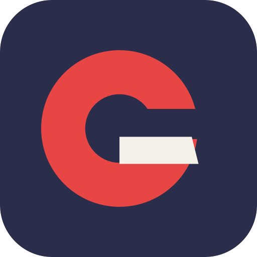
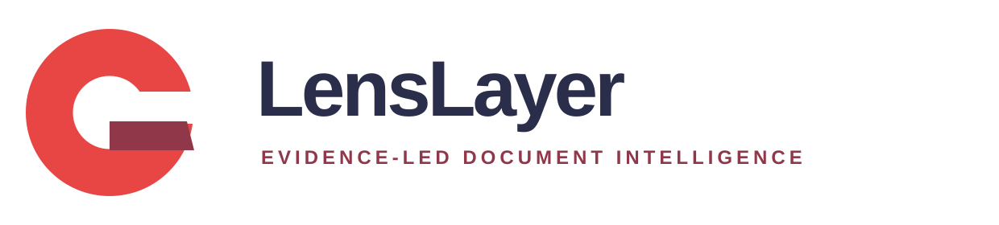
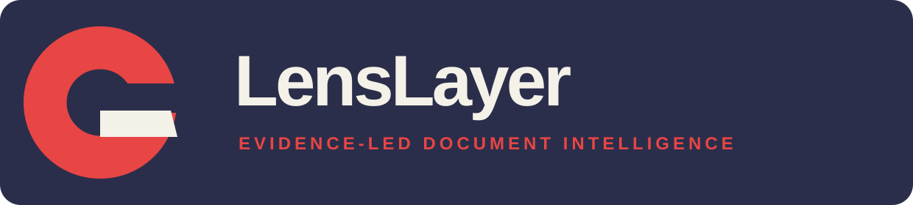
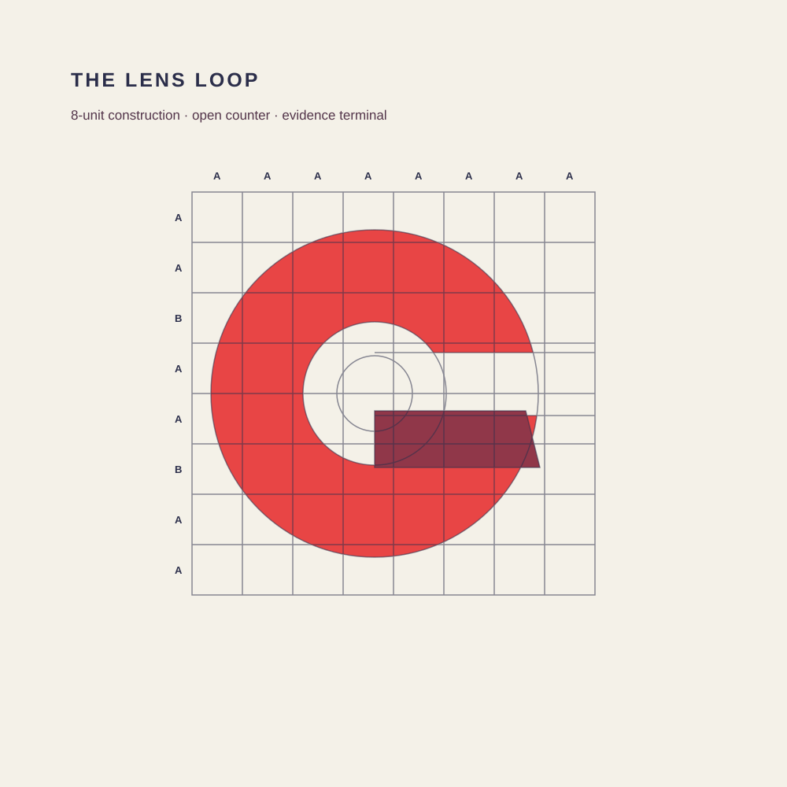
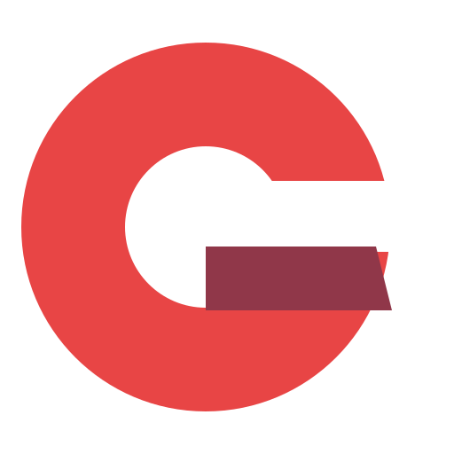

Evidence-led document intelligence
Find the clause.
A precise identity for consequential document review: open enough to inspect, structured enough to trust.

01 · Logo system
One loop. Two decisions.
The coral C stays open to inspection. The wine terminal completes the G and records the outcome.


02 · Color
Signal against evidence.
Navy provides authority without legal-tech cliché. Coral calls attention. Wine and plum carry depth, evidence, and consequential states.
Ink Navy#2B2E4A
Signal Coral#E84545
Evidence Wine#903749
Clause Plum#53354A
03 · Construction
Measured, not mechanical.
An eight-unit framework creates repeatable proportions while the open counter keeps the mark human and active.



Evidence before assertion.
01Calm under consequence
02Specific about the evidence
03Direct about the next action
04Honest about uncertainty